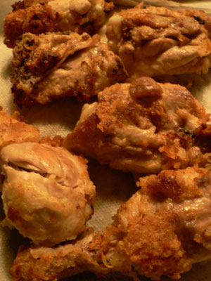

Capote dinner party
Making dinner for five people is a challenge for an amateur like me, and until last night I had never fed that many people and been happy with what was on the table. I have endless respect for the millions of mothers in the world feeding tables full of hungry, picky men night after night; it’s not an easy job.
Uncle Ted and I had been planning to have a Capote party for months now, and we finally got the guests and DVD together last night. Ted’s friend said we should go southern because of Truman’s background, which was fine by me; I’ve learned a thing or two about southern cuisine from my southern beau, especially during my collard greens phase. We decided on a menu of fried chicken, macaroni and cheese, and braised collards. Alex and Mattie brought a decadently creamy key lime pie from Agata & Valentina for dessert, which made our lives easier.
Of course, it’s always pretty easy when you have Uncle Teddy hosting and helping in the kitchen. Look how cute he is working two bowls at once:
Finding a fried chicken recipe is hard even when you work in a food library. I finally found one in The Gourmet Cookbook, for “Claritha’s Fried Chicken.” The chicken was marinated in onions and buttermilk, dredged in flour and spices, and then fried in two cups of shortening and one stick of butter. I know, the whole stick of butter almost pushed me over the edge. Look at it in there:
I can almost hear it saying, “What the heck am I doing in this bath of trans fats?” Ted and I decided that Claritha probably died of a heart attack eating like this.

She also probably died happy, because her chicken was delicious. We made Ruth Reichl’s macaroni and cheese from the same book, a recipe my mom favors, and that you would too if you could taste the panko crust. For the collard greens, we cooked a bunch of them in four tablespoons of butter for a few minutes before pouring in about a cup of Jim Beam, a half cup of beer, and seasonings like salt and red pepper flakes. Two hours later they were softer than spinach and far more substantial.
The movie, incidentally, was excellent. “Riveting” was my word of choice after a few drinks, and everyone agreed with me.
Comments
Funny you should have prepared collard greens last night, because my mother made kale! Unfortunately I didn’t get to eat any because we had to dash off to Poppy’s gig where we were fed a catered dinner of meatloaf! You know I love meatloaf but I’m not eating it unless I know where the ground beef comes from; I figure a caterer probably gets theirs from those big plastic-wrapped tubes they call ‘chubs’, very suspicious. Anyway, back to the kale—evidently it was terrific and Calvin loved it.
I’ve been wanting to try that chicken recipe and now I will; the butter doesn’t scare me nor does the Crisco in something I’m eating once or twice a year.
The coincidence deepens—I made your meatloaf recipe last night! I’ll post it later today.
Glad to hear Cal liked kale.
While we all agreed it was “riveting,” none of us could explain exactly what that metaphor means. Jeans have rivets, it was decided, but what exactly are they, and how do they relate to good movies? Can anything besides a performance be riveting? A car? A nailgun?
Rivet (v):
-Webster
Add a comment